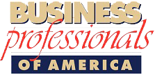

Conference Objectives:
From May 1-5, we invite you to the 2019 Business Professionals of America National Leadership Conference. Join thousands of students from across the country who will gather to compete, showcase their business skills and develop their leadership in Anaheim,
California. The National Leadership Conference is the culmination of the BPA year filled with hard work and dedication put into competitions, Torch Awards, leadership development, service and more!
The 2019 National Leadership Conference will offer four exciting days of competitions, leadership development, workshops, National Officer Elections, fun tours and much more. Whether it’s by participating in competitions, running for national office,
attending the National Leadership Academy, being an NLC Intern, receiving an award or participating in elections, there are numerous ways to qualify for the 2019 National Leadership Conference and experience Anaheim.
The following are objectives of BPA's National Leadership Conference:
- Participate in educational seminars and workshops.
- Hear nationally prominent speakers.
- Elect national student officers.
- Participate in the Workplace Skills Assessment Program.
- Participate in general assemblies designed to conduct the business of Business Professionals of America.
- Transact business of the association.
- Participate in leadership programs.
Qualify :
- In order to attend the National Leadership Conference, a participant must be a registered BPA member in good standing and be approved for attendance.
- All students must attend the National Leadership Conference with an approved chaperone.
- Additionally, a member must qualify for the conference in at least one of the following ways:
- By finishing high enough in a State WSAP Competitive Event. Contact your State Advisor for information on regional and state conferences where WSAP contests take place.
- Be a local, regional, or state officer.
- Represent your state as a voting delegate for your division.
- Be involved in a National Officer campaign either as a candidate or otherwise actively involved.
- Earn an Ambassador Torch Award or BPA Cares Award.
- Participate in the National Leadership Academy and National Intern Program.
- Be involved in the NLC in a manner which is purposely planned by the BPA member and local advisor.
As you can see, attending NLC is not limited to simply winning your competitive event. Don’t miss your chance to be a part of this year’s National Leadership Conference in Anaheim, California!
Copyright © 2019 Business Professionals of America